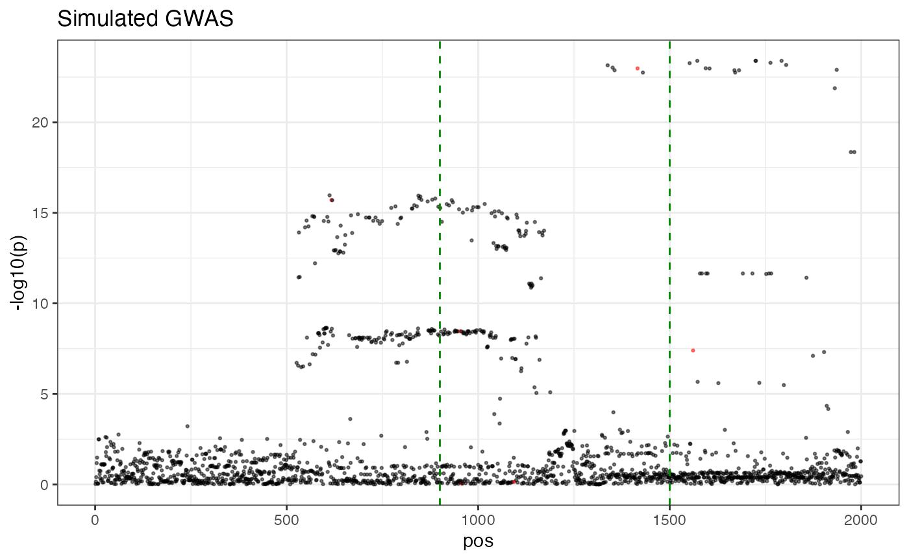

library(RcppCNPy)
library(ggplot2)
library(susieR)
library(h2geneR)
library(MASS)
# Load the data
# ld <- npyLoad("../data/ld.npy")
# beta <- npyLoad("../data/beta.npy")
# gene_mask <- as.logical(npyLoad("../data/gene_mask.npy"))
# save(ld, beta, gene_mask, file="../data/toy.RData")
data("toy")
hsq <- 0.005
n_indiv <- 40000
n_snp <- nrow(ld)
sim_i <- 3
# simulate from beta and ld
set.seed(1)
sim <- simulate_gwas(ld, n_indiv, hsq, beta[, sim_i])
susie_fit <- susie_suff_stat(bhat=sim$beta_hat, shat=sim$se_hat,R=ld, n=n_indiv)
# simulate genotype
# X <- mvrnorm(n = n_indiv, mu=rep(0, n_snp), Sigma=ld)
# insample_ld <- cov(X)
# simulate phenotype
# g <- X %*% beta[, sim_i]
# e <- rnorm(n_indiv, sd = sqrt(var(g) * (1 - hsq) / hsq))
# y <- g + e
# zsc <- t(X) %*% y / sqrt(n_indiv)
# susie_fit <- susie(X, y)
zsc <- sim$beta_hat / sim$se_hat
posterior_samples <- susie_get_posterior_samples(susie_fit, num_samples=500)
gene_est <- h2gene(susie_fit, ld, as.matrix(gene_mask, ncol=1))$hsq
df <- data.frame(pos=1:length(zsc),
pval=-log10(2 * pnorm(-abs(zsc))),
causal=beta[, sim_i] != 0)
p0 <- ggplot(df, aes(x=pos, y=pval, color=causal, size=factor(causal), alpha=factor(causal))) +
geom_point() +
scale_size_discrete(range=c(0.5, 0.5)) +
ylab('-log10(p)') +
scale_alpha_discrete(range=c(0.5, 0.5)) +
scale_colour_manual(values=c("black", "red")) +
theme_bw() +
theme(legend.position="none") +
geom_vline(xintercept=900, linetype="dashed",
color = "green4", size=0.5) +
geom_vline(xintercept=1500, linetype="dashed",
color = "green4", size=0.5) +
ggtitle("Simulated GWAS")## Warning: Using size for a discrete variable is not advised.## Warning: Using alpha for a discrete variable is not advised.
print(p0)
##
## Attaching package: 'patchwork'## The following object is masked from 'package:MASS':
##
## area##
## Attaching package: 'dplyr'## The following object is masked from 'package:MASS':
##
## select## The following objects are masked from 'package:stats':
##
## filter, lag## The following objects are masked from 'package:base':
##
## intersect, setdiff, setequal, union
theme_set(theme_classic())
n_frame <- 20
df_plot <- c()
for (sample_i in 1:n_frame) {
sample_b <- posterior_samples$b[, sample_i]
sample_bhat <- (ld %*% sample_b)
df <- data.frame(
pos = 1:length(sample_bhat),
betahat = sample_bhat,
beta = sample_b,
sample_i = sample_i
)
df_plot <- rbind(df_plot, df)
}
filenames <- paste0("frame", 1 : n_frame, ".jpg")
for (frame_i in 1:n_frame) {
p1 <-
ggplot(df_plot %>% filter(sample_i == frame_i),
aes(x = pos, y = betahat)) +
geom_point(size = 0.2, alpha = 0.3) +
ylab(expression(paste(V, beta))) +
ylim(-0.1, 0.1) +
theme(legend.position = "none") +
geom_vline(
xintercept = 900,
linetype = "dashed",
color = "green4",
size = 0.5
) +
geom_vline(
xintercept = 1500,
linetype = "dashed",
color = "green4",
size = 0.5
) +
theme(
axis.text.x = element_blank(),
axis.title.x = element_blank(),
plot.title = element_text(size = 8)
) +
geom_hline(yintercept = 0) +
ggtitle("Induced expected marginal effects")
p2 <-
ggplot(df_plot %>% filter(sample_i == frame_i), aes(x = pos, y = beta)) +
geom_segment(aes(xend = pos, yend = 0), size = 0.5) +
geom_vline(
xintercept = 900,
linetype = "dashed",
color = "green4",
size = 0.5
) +
geom_vline(
xintercept = 1500,
linetype = "dashed",
color = "green4",
size = 0.5
) +
ylab(expression(beta)) +
ylim(-0.1, 0.1) +
geom_rect(
xmin = 900,
xmax = 1500,
ymin = -0.11,
ymax = -0.095,
fill = 'darkred'
) +
geom_hline(yintercept = 0) +
ggtitle("Sampled causal effects") +
theme(plot.title = element_text(size = 8))
p3 <- ggplot(data.frame(est = gene_est), aes(x = 1, y = est)) +
geom_violin() +
stat_summary(
fun = mean,
geom = "point",
shape = 23,
size = 2
) +
ylab("Posterior of gene h2") +
geom_point(data = data.frame(est = gene_est[seq(1, frame_i)]),
size = 1,
alpha = 0.5) +
theme(
axis.title.x = element_blank(),
axis.text.x = element_blank(),
axis.ticks.x = element_blank()
)
p <- ((p2 / p1) | p3) + plot_layout(ncol = 2, widths = c(2, 1))
ggsave(filenames[frame_i], plot=p, width=6, height=5, dpi=200)
}
system("convert -delay 1.0 frame*jpg frame.gif")
unlink("*.jpg")
knitr::include_graphics("frame.gif")example caption